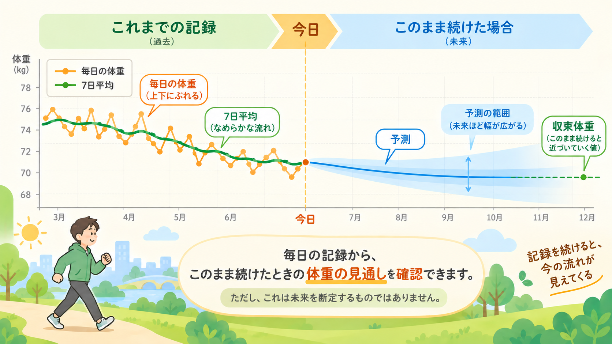

「このまま続けたら何kg？」体重予測のしくみ
公開日: 2026年9月22日
「今くらいの生活をこのまま続けたら、半年後や1年後の体重はどうなるんだろう？」 体重を記録していると、今日の数字だけではなく、その先の流れも気になることがあります。
まいにちウォークの体重予測は、未来の体重を言い当てる機能ではありません。 最近の体重記録に体重変化のモデルを当てはめて、今の状態がこのまま続いた場合に、体重がどちらへ向かうかを見る機能です。

先に要点
- まいにちウォークは、最近の体重記録から、今の体重変化の状態を推定します。
- 同じ状態が続いても、体重が同じ速さで増減し続けるとは考えません。長い目では、ある値へ徐々に近づくと考えます。その値を収束体重と呼んでいます。
- 予測は「今の状態が続けば」という前提付きの見通しです。食事や活動量などが変われば、予測も変わります。
体重は、このまま同じ速さで増減し続けるわけではない
たとえば、最近の体重が1週間に0.2kgずつ減っているとします。 単純に考えると、「このまま1年続けば約10kg減る」と計算したくなるかもしれません。
でも、体重の変化を長期的に考えると、それほど単純ではありません。 体重が変わると、身体が1日に使うエネルギーの量も変わります。歩くときに使うエネルギーも、体重によって変わります。
そのため、同じような生活を続けたとしても、体重の変化する速さはずっと一定ではありません。 まいにちウォークでは、体重が一直線に増え続けたり減り続けたりするのではなく、長い目ではある値へ徐々に近づいていく形で考えています。
「収束体重」って何？
まいにちウォークでは、今と同じような状態が長く続いたと仮定したときに、モデル上で体重が近づいていく値を収束体重と呼んでいます。
これは「目標体重」ではありません。「健康的な体重」や「理想体重」という意味でもありません。 あくまで、最近の体重の動きや歩数などから推定した今の状態を、そのまま長く続けた場合のモデル上の行き先です。
そのため、収束体重は現在の体重より低くなることもあれば、高くなることもあります。 現在の体重が収束体重より上にあれば、モデル上では下がる方向へ向かいます。逆に、現在の体重が収束体重より下にあれば、上がる方向へ向かいます。
そして収束体重へ近づくにつれて、体重の変化はだんだん小さくなります。 「収束」という言葉は、必ずその体重になるという意味ではありません。生活が変われば、収束体重そのものも変わります。
何が収束体重を決めるの？
収束体重は、歩数だけで決まる数字ではありません。 まいにちウォークの記録タブの予測では、主に最近の体重の動き、日常の歩数、そして体重が変わると消費エネルギーも変わるというモデルを組み合わせて考えます。
最近の体重の動き
記録タブの予測では、「1日に何kcal食べたか」を利用者に入力してもらっているわけではありません。 その代わりに、最近の体重記録そのものを使います。
体重が最近少しずつ下がっているのか、ほぼ横ばいなのか、それとも増えているのか。 その実際の変化から、今の食事や活動などをまとめた結果として、どのようなエネルギー収支の状態になっているのかをモデルへ当てはめます。
つまり、最近の体重記録には、食事だけでなく日常生活全体の結果が表れている、と考えています。
毎日の歩数と歩幅
体重予測には、最近の平均歩数と歩幅も使います。 歩けばエネルギーを使います。そして同じ歩数でも、歩幅や体重によって歩行の距離や消費エネルギーは変わります。
そのため、日常的にどのくらい歩いているかは、長期的に体重がどこへ向かうか、そしてそこへどのくらいの速さで近づくかを考える材料になります。 ただし、「何歩なら何kgになる」と歩数だけで決めているわけではありません。
体重が変わると、使うエネルギーも変わる
もう一つ大切なのが、体重そのものです。 モデルでは、体重が変われば、身体が使うエネルギーも変わると考えます。
たとえば体重が減れば、同じ生活や同じ歩数でも、以前とまったく同じエネルギーを使い続けるとは考えません。 すると、体重が変化するにつれて、摂取する側と消費する側の差も少しずつ変わっていきます。
そしてモデル上でその差がほぼ釣り合うところが、収束体重になります。 このため、体重は「今の減り方のまま永遠に減り続ける」のではなく、ある値へ近づくほど変化が小さくなっていきます。
では、まいにちウォークはどう予測するの？
考え方を大きく分けると、 最近の体重記録を見る → 体重変化のモデルを当てはめる → 収束体重と変化の速さを求める → 今日から先の体重の流れを計算する という流れです。
計算に使う体重記録は、古いものをすべて使い続けるわけではありません。 現在の実装では、直近約90日までの記録を使います。
半年前や1年前と今とでは、食生活や活動量が変わっているかもしれません。 古い生活まで同じ重みで混ぜるより、最近の状態を見ることを優先しています。
なぜ今日の体重ではなく「7日平均」から始めるの？
毎日の体重には、水分や食事などによる短期的な上下があります。 昨日より0.8kg増えていたとしても、その0.8kgがそのまま体脂肪の増加とは限りません。
そこで、まいにちウォークの予測カーブは、最後に測った1日の体重から始めるのではなく、実測の7日平均を起点にします。 短期的な上下に大きく引っ張られず、最近の体重の流れから予測を始めるためです。
7日平均については、「体重はなぜ7日平均で見るの？」で詳しく説明しています。
予測には、なぜ「幅」があるの？
未来の体重を1本の線だけで表示すると、その線が確定した未来のように見えてしまいます。 実際の体重記録には、日ごとのばらつきがあります。
まいにちウォークでは、その記録から推定される不確かさも考慮して、予測を1本の線だけではなく、幅を持った範囲として表示します。 今日に近いところでは範囲は狭く、先へ進むほど徐々に広がります。
これは、記録から推定した収束先の不確かさが、時間がたつにつれて将来の体重予測へ反映されていくためです。 そして、予測の幅が大きくなりすぎる先まで、無理に数字を伸ばし続けることはしません。
もちろん、これはモデルの中で計算した不確かさです。 現実には、食事や活動量、体調などが変わることもあります。特に遠い未来ほど、「今の状態が続く」という前提自体が変わる可能性があります。
どのくらい記録すると予測できる？
「このまま続けると」の表示には、まず体重を2週間ほど記録する必要があります。 記録がまだ少ないときには、予測を無理に出すのではなく、あとどのくらい記録が必要なのかを画面に表示します。
また、最近体重を記録していない場合や、記録の日付が偏っていてモデルをうまく当てはめられない場合も、その理由を表示します。
一方で、「記録が1年あれば、3か月より必ず精度が高い」という考え方でもありません。 予測には直近約90日の記録を使うため、記録を長く続けることには意味があっても、古い記録を無制限に足し続けて精度を上げる仕組みではありません。
最近の体重とモデルが合わないときはどうする？
数式を使えば、計算そのものはできても、その数字をそのまま利用者へ見せてよいとは限りません。 たとえば、これまでの記録から計算した体重の流れと、最近の実測体重が大きく離れている場合があります。
食生活や活動量が最近変わったときなどには、そのようなことが起こりえます。 その場合、まいにちウォークは将来の体重を数字として強く表示しません。
グラフには予測の線を参考として薄く表示し、なぜ通常の予測値を出していないのかも画面に示します。 「計算できたから表示する」のではなく、最近の記録とモデルが合っているかも確認してから見せる設計です。
新しく記録すると、予測も変わる
体重予測は、一度計算したら固定されるものではありません。 新しい体重を記録すると、最近の記録を使って再びモデルを当てはめます。
そのため、生活が変われば予測も変わります。これは予測が失敗したという意味ではありません。 むしろ、今の生活の結果に合わせて見通しを更新することが、この機能の目的です。
たとえば食事量を変えたり、歩く量が増えたりして、その状態が体重記録に表れてくれば、新しい記録をもとに収束体重や予測の流れも変わっていきます。
「予測」と「試算」は別のもの
まいにちウォークには、計画タブにも将来の体重を計算する機能があります。 ただし、記録タブの予測と、計画タブの試算は別のものです。
記録タブの予測は、これまでの体重記録を中心に、「今までの状態がこの先も続いたらどうなるか」を見ます。
一方、計画タブの試算では、摂取エネルギーや歩数などを利用者が設定して、「これから条件をこう変えたらどうなるか」を試します。 同じ人でも、この2つの数字が違うことがあります。それは、どちらかが間違っているからではなく、答えようとしている質問が違うためです。
実測 → 7日平均 → 予測
まいにちウォークでは、体重記録を時間の長さによって少しずつ違う見方で振り返ります。
実測は、「今日何kgだったか」を見るものです。 7日平均は、日ごとの上下を少しならして、「最近どちらへ動いているか」を見るものです。 そして体重予測は、その最近の記録から、「この状態が続いたらその先はどうなるか」を見るものです。
今日を見る → 最近を見る → この先を見る
予測のためだけに特別な記録を増やすのではなく、毎日の体重記録を、少し長い時間軸でも振り返れるようにしています。
歩数と体重を一緒に振り返る
体重は、歩数だけで決まるものではありません。 それでも、毎日の歩数を記録しておくことは、自分の日常の活動量を振り返る分かりやすい方法です。
歩数と体重をそれぞれ記録し、1日だけではなく少し長い流れで見る。 その積み重ねが、「最近はどうだったか」「このままならどうなるか」を考える材料になります。
歩数と体重の基本的な関係については、「歩数と体重はどう関係する？」で詳しく説明しています。
記録すると、「この先」まで見られる
まいにちウォークでは、体重の記録は任意です。記録しなくても、歩数計として使えます。
体重を記録すると、毎日の実測値だけでなく、7日平均で最近の流れを振り返れます。 さらに記録が積み重なると、その記録から「この状態を続けたら、体重はどこへ向かうか」を見ることもできます。
未来を決めるためではなく、今の生活を少し長い目で振り返るための数字として使ってください。
iOS版 App Store関連記事
参考にした情報
- NIDDK Research Behind the Body Weight Planner
- Hall KD, et al. Quantification of the effect of energy imbalance on bodyweight. Lancet. 2011;378(9793):826-837.
上記は、体重の変化を時間とともに扱うという一般的な考え方の参考資料です。 まいにちウォークは、これらのモデルをそのまま実装しているわけではありません。アプリで使っている式・係数・表示条件は、まいにちウォーク自身の仕様と実装に基づいています。
本記事は一般的な情報提供と、まいにちウォークの機能説明を目的としています。 本アプリは医療機器ではなく、表示される予測は診断・治療や個別の医療判断を目的とするものではありません。